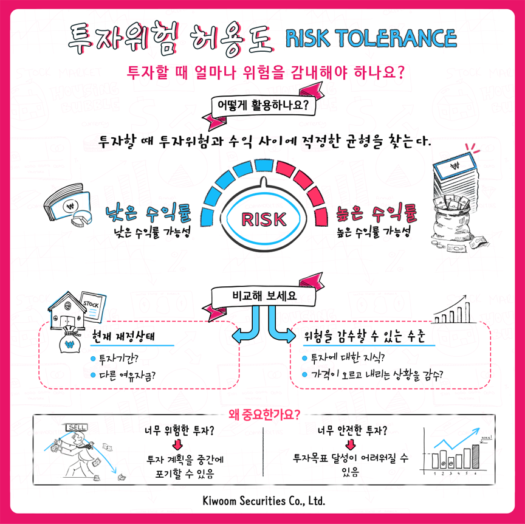

위험감내도(성향)
위험 감내는 투자에서 얼마나 많은 위험을 감내할 수 있는지 얘기합니다.
투자에는 항상 손실이 발생할 위험이 따릅니다.
그러나 더 많은 수익을 내는 투자 역시 더 위험한 경향이 있습니다.
위험 감내성을 파악하면 이 두 문제 사이의 적절한 균형을 파악하는 데 도움이 될 수 있습니다.
즉, 큰 손실을 방지하고 수익을 높이려는 목표를 세울 수 있습니다.
위험 감내도는 은 두 가지 주요 고려 사항으로 요약됩니다. 즉, 리스크를 감당할 수 있는 재정적 능력과 위험에 대한 개인적 편안함 정도입니다. 각 고려 사항은 다음과 같습니다.
| 재정적 능력 | 편안함 정도 | |
|---|---|---|
| 투자가 얼마나 잘 확립되어 있습니까? |
|
|
| 투자 가격 차트는 어떻게 생겼습니까? |
|
|
| 투자에 무엇이 잘못 될 수 있습니까? |
|
|
| 전문가들은 뭐라고 말합니까? |
|
변동성은 투자 위험의 중요한 척도입니다. 대부분의 경우,
보통 투자에서 위험과 보상은 함께 옵니다. 한 달 만에 두 배로 늘어날 수 있는 투자 기회를 원한다면 한 달 만에 모든 원금을 잃을 수 있는 가능성도 받아들여야 할 것이다. 그리고 손실을 피하고 싶다면, 큰 이익의 기회를 포기해야 합니다.
변동성은 위험에 대해 생각하는 좋은 척도이지만, 많은 전문가들은 위험의 몇 가지 중요한 유형을 간과한다고 주장합니다. 다음은 우리가 범하는 오류입니다.
변동성을 설명하는 복잡한 정량적 방법
(주요 방법 중 하나는 수학용어는 "표준 편차")이 있지만, 일부 규칙과 상식은 어떤 화려한 수학만큼이나 유용할 수 있습니다.
대체로 투자자산의 주요 범주를 다양한 변동성 버킷으로 정렬할 수 있습니다.
이러한 각 범주 내에서 변동성이 큰 투자와 변동성이 적은 투자를 구분할 수 있는 몇 가지 방법은 다음과 같습니다.
| 고려사항 | 이유 |
|---|---|
| 투자가 얼마나 잘 확립되어 있습니까? |
|
| 투자 가격 차트는 어떻게 생겼습니까? |
|
| 투자에 무엇이 잘못 될 수 있습니까? |
|
| 전문가들은 뭐라고 말합니까? |
|
변동성은 투자 가격의 변동 및 변화 빈도를 나타냅니다. 변동성은 위험의 가장 중요한 척도 중 하나이기 때문에 투자의 변동성을 이해하는 것이 중요합니다. 변동성이 낮거나 높은 자산에만 투자하는 것이 반드시 좋은 것은 아닙니다. 대신 가장 중요한 것은 포트폴리오의 적절한 배분이 투자자에게 적합한 수준의 변동성을 갖도록 하는 것입니다.
"변동성"은 위험한 투자를 나타냅니다. 또한 와인을 너무 많이 마신 후 가족 모임을 설명합니다.
- 키움증권